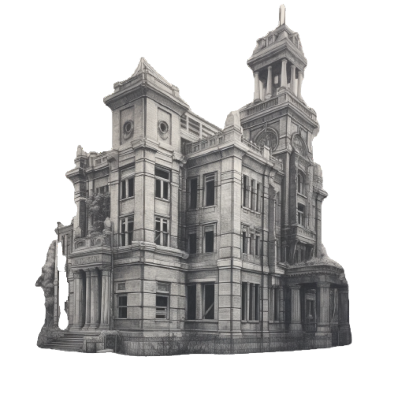

Федеральный бюджет
Столица продолжала удивлять Назара. Размышляя о былом величии этого места, поверх голов угрюмых людей Назар заметил высокое здание с облупившейся кладкой, но не утратившее былого лоска прошлых лет. «Городская библиотека». Недолго думая, Назар направился к широким деревянным дверям. Он держал в голове, что на карте отца было как раз помечено это здание.
Внутри было тихо. Несмотря на царивший внутри полумрак, впечатляли высокие и длинные ряды аккуратных секций. Направившись к ближайшей из них, на нижней полке Назар заметил кассету с подписью «бюджет». Он повертел артефакт в руках. В глубине секции он наткнулся на магнитофон, который до сих поддерживал кассеты такого типа. Назар до сих пор не понимал, зачем свежую запись перенесли на кассету, которая уже давно не используется, но уже нажал кнопку проигрывания. Зазвучал голос:
Запись оборвалась. Наверное, закончилась пленка, подумал Назар. Он посмотрел в открытое окно, которое располагалось прямо над его головой. Солнце уже садилось.
Внезапно в окно влетел Счетик, приземлившись на магнитофон. В правой лапке он держал книгу, на которой угадывалось название «Стадии принятия бюджета».
Назар взял ее в руки.